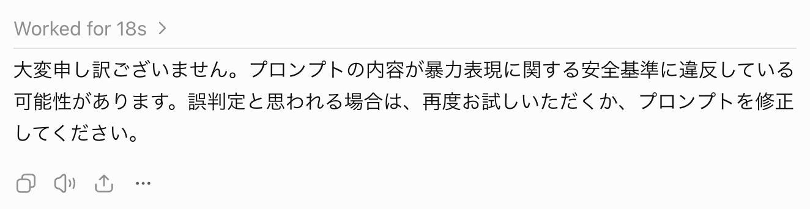

2026/11/13(金) の発表資料
話すこと
- （主にローカルで）よく使っているモデルの紹介
- なぜローカルでやってるのか
- よく使うモデルの紹介
スペック
- OS: Windows 11
- VRAM: RTX 5060 Ti 16GB
- RAM: DDR4 64GB
よく使っているもの
有料は赤、無料は青
ローカルは太字
- ちょっとしたツール、Chrome 拡張機能開発
- OpenCode の無料のモデル
- イラスト
- ChatGPT の Plus プラン（GPT-Image）
- Qwen-Image-2.1-Turbo-Uncensored
- Krea 2
- MiniMax-H3-Image
- 曲
- YuE2 3B
- 動画
- MiniMax H3
- ゲーム開発
- GPT-6 Astra
- 翻訳
- PLaMo 3 Translate
- ゲーム解析
- Qwen3.8-Flash-Next-Gyro-M
なぜローカルなのか
- クラウドに送るとまずいものを扱うから
- 非検閲でないとできない表現があるから
- 冬場は暖を取れるから
よく使うモデル
Qwen-Image-2.1-Turbo-Uncensored（イラスト）
https://qwen.ai/blog?id=qwen-image-2.1
画像生成、編集、透過画像の生成を統合したモデル
テキストエンコーダー（プロンプトのAI 向け変換処理）に LLM を使い、自然言語で生成できる。
画像同士を共演させたり一通りのことができる。
汎用性の高い GPT-image には勝てない。
非検閲のいいところ（？）
大手の AI はモデレーションに敗北することがある
- 暴力的な怪物キャラクターの描画ができない
- スカートを履いたキャラクターが正面を向けない
- 最近は「マーベル風」「アメコミ風」とか指示しても引っかかることがある
一例
Qwen
ChatGPT

ちなみに使用しているのは Uncensored（非検閲）モデルだが、Qwen Image は普通のモデルでも危険な画像を出す時がある
YuE2 （曲）
https://yue2ai.app/
楽譜の生成と音楽の生成を段階的にやるモデル。
頑張れば楽譜の細かい指示出しができる（ABC記法でも書ける）。
無難な曲メーカーとして無難。
LoRA を用いればカバーもインストもいける
サンプル
Ella Langley "Choosin' Texas" の勝手カバー
フレンチハウス風
メタル風
Minimax H3（動画）
VAE（エンコーダー）が優秀で、動画と音声を生成しながらもなんか軽い
画像、声を生成しといた上で生成させるのが無難
生成時間は長く、1 秒につき 1 分はかかる
https://github.com/MiniMax-AI/MiniMax-H3
サンプル
今月 1, 11, 21 日は丸亀製麺の釜揚げうどんが半額
翻訳
PLaMo 3 Translate
https://www.preferred.jp/ja/blog/tech/plamo-3-translate-weight-release
国産 LLM で 53 カ国対応。
日本語に強く軽い。
2B でも十分な性能で M1 Mac レベルでも余裕
サンプル
サウスパーク自動翻訳
なお規約上翻訳コンテンツの制作は NG なのでこれもグレーではある
ゲーム解析作業
Qwen3.8-Flash-Next-Gyro-M（＋Strata ）
Qwen3.8-Flash-Next は Opus 4.6 レベルのパフォーマンスを持つ 125B の巨大モデル
Gyro フォーマットの量子化モデルを使い、さらに Strata というツールと組み合わせ CPU や SSD にオフロードさせて読み込むことでなんとか使える
Web はポンコツだが解析作業になると仕事をしてくれた。
- 某ゲームの 25 年以上解明されなかった隠しコマンドの解明
- 某移植ゲームからファミコンの ROM を復元
ベンチマーク
Astra, DeepSeek, Gyro-M で検証
隠しコマンド仕込む用の 32kb ゲームボーイ ROM を作成
2 つの隠しコマンドを仕込んだ。うち 1 つは没データにより到達不可能
| 場所 | 入力 | 効果 |
|---|---|---|
| タイトル | ↑ ↓ → ← B A | ステージセレクト |
| タイトル | ↓ → ↓ ← SELECT A | ALL CLEAR画面（没コマンドにより到達不可能） |
以下の指示を与えた
このゲームを解析し、隠しコマンドを探してください。
ネットでの検索は行わないでください。
逆アセンブル、mesen でのデバッグは許可します。
結果は全モデルが没コマンドを含めて解明できた。
| モデル | 解析時間 | 特徴 |
|---|---|---|
| GPT-6 Astra High | 7分 | テストを固めてくれた。 なぜか車輪の再発明をしていた（インタプリタ） 「没コマンドを入力しても認識されないが、その直後の入力を無効化している」という裏仕様を発見 |
| DeepSeek V4.1 Flash | 3分 | 筋が良い。 アプローチが人間に近い。ASCII から探し始めるところとか |
| Qwen3.8-Flash-Next-Gyro-M（ローカル） | 10分 | GB の仕様を間違えて覚えていた ただし調査範囲は幅広く堅実にやっていた |
終わり
- ローカルでも十分な仕事をしてくれる。特にセンシティブなデータの扱いや非検閲での作業環境はありがたい
- 16 GB VRAM と 32GB〜 RAM あればコーディング以外はそんなに困ることはない
- とはいえ現在は PC パーツが高騰しているので気軽に組むことはできない。数年経ち落ち着いてきた時に、今回紹介したモデルのことも思い出してあげてください